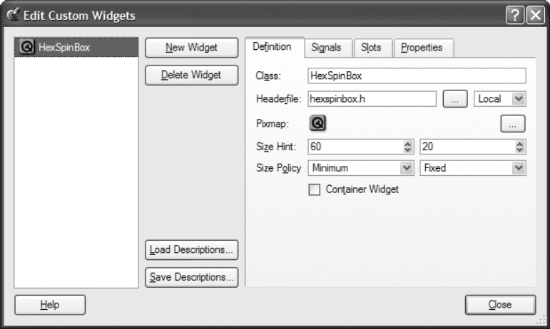

| Каталог документации / Раздел "Программирование, языки" / Оглавление документа |
| |
| Разработка графического интерфейса с помощью библиотеки Qt3 | ||
|---|---|---|
| Пред. | Глава 5. Создание собственных виджетов. | След. |
Прежде, чем мы сможем использовать наш виджет в Qt Designer, мы должны известить его об этом. Существует два подхода: подключение как "простого виджета" и как плагина.
Методика "простого виджета" заключается в заполнении полей диалога Qt Designer. После этого виджет может вставляться в формы, разрабатываемые в среде Qt Designer, но отображаться на форме, во время редактирования и предварительного просмотра, он будет в виде черного прямоугольника. Ниже приводится последовательность действий по интеграции HexSpinBox таким способом:
Выберите пункт меню Tools|Custom|Edit Custom Widget. Перед вами появится диалоговое окно "Edit Custom Widgets".
Щелкните по кнопке "New Widget".
Измените имя класса MyCustomWidget на HexSpinBox и имя заголовочного файла mycustomwidget.h на hexspinbox.h.
Измените "Size Hint" на (60, 20).
Измените "Size Policy" на (Minimum, Fixed).

Рисунок 5.6. Диалог "Edit Custom Widgets".
Прежде всего, необходимо создать класс-потомок от QWidgetPlugin и перекрыть некоторые виртуальные функции. Весь код можно разместить в тех же самых файлах с исходными текстами, но мы создадим файлы плагина отдельно. Допустим, что файлы, с исходным кодом плагина, находятся в каталоге iconeditorplugin, а с исходным кодом самого компонента -- в параллельном каталоге iconeditor.
Заголовочный файл плагина:
#include <qwidgetplugin.h>
#include "../iconeditor/iconeditor.h"
class IconEditorPlugin : public QWidgetPlugin
{
public:
QStringList keys() const;
QWidget *create(const QString &key, QWidget *parent,
const char *name);
QString includeFile(const QString &key) const;
QString group(const QString &key) const;
QIconSet iconSet(const QString &key) const;
QString toolTip(const QString &key) const;
QString whatsThis(const QString &key) const;
bool isContainer(const QString &key) const;
};
Класс IconEditorPlugin является своего
рода "фабрикой", которая изготавливает и выпускает экземпляры
виджета IconEditor. Функции плагина
используются средой Qt
Designer для создания экземпляров класса и получения
необходимой информации.
QStringList IconEditorPlugin::keys() const
{
return QStringList() << "IconEditor";
}
Функция keys() возвращает список
виджетов, "выпускаемых" плагином-фабрикой. Наш плагин
"выпускает" только один виджет -- IconEditor.
QWidget *IconEditorPlugin::create(const QString &, QWidget *parent,
const char *name)
{
return new IconEditor(parent, name);
}
Функцию create() вызывает
Qt
Designer, когда необходимо создать экземпляр виджета.
Первый аргумент -- имя класса виджета. В данном примере мы можем
игнорировать его, поскольку наш плагин обслуживает только один
класс. Все остальные функции так же получают имя класса в первом
аргументе.
QString IconEditorPlugin::includeFile(const QString &) const
{
return "iconeditor.h";
}
Функция includeFile() возвращает имя
заголовочного файла виджета, который представляет плагин. Имя файла
заголовка подключается к коду, создаваемому утилитой uic.
bool IconEditorPlugin::isContainer(const QString &) const
{
return false;
}
Функция isContainer() возвращает
true, если виджет может содержать в
себе другие виджеты, иначе -- false. Например, QFrame может содержать в себе другие виджеты. В нашем
случае возвращается false,
поскольку нет смысла делать из IconEditor
контейнер для других виджетов. Строго говоря, любой виджет может быть
площадкой для размещения других виджетов, но
Qt Designer отвергает такую
возможность, если isContainer()
возвращает false.
QString IconEditorPlugin::group(const QString &) const
{
return "Plugin Widgets";
}
Функция group() возвращает имя секции
палитры компонентов, в которой будет размещен виджет. Если такой секции
пока нет, она будет создана автоматически.
QIconSet IconEditorPlugin::iconSet(const QString &) const
{
return QIconSet(QPixmap::fromMimeSource("iconeditor.png"));
}
Функция iconSet() возвращает иконку
для палитры компонентов.
QString IconEditorPlugin::toolTip(const QString &) const
{
return "Icon Editor";
}
Функция toolTip() возвращает текст
подсказки, которая появляется при наведении указателя мыши на иконку
виджета в палитре компонентов.
QString IconEditorPlugin::whatsThis(const QString &) const
{
return "Widget for creating and editing icons";
}
Функция whatsThis() возвращает текст,
который появляется по запросу "What's This?"
Qt
Designer-а.
Q_EXPORT_PLUGIN(IconEditorPlugin)
Файл с исходным текстом плагина должен завершаться вызовом
макроса Q_EXPORT_PLUGIN().Файл .pro для сборки плагина выглядит примерно так:
TEMPLATE = lib
CONFIG += plugin
HEADERS = ../iconeditor/iconeditor.h
SOURCES = iconeditorplugin.cpp \
../iconeditor/iconeditor.cpp
IMAGES = images/iconeditor.png
DESTDIR = $(QTDIR)/plugins/designer
Предполагается, что переменная окружения QTDIR содержит путь к каталогу, куда была установлена
библиотека Qt. Когда вы собираете плагин командой make или nmake, он автоматически
устанавливается в каталог plugins
Qt
Designer-а.После сборки плагина вы можете использовать IconEditor в Qt Designer точно так же, как встроенные виджеты Qt.
| Пред. | В начало | След. |
| Создание класса-потомка от QWidget. | На уровень выше | Двойная буферизация. |
|
|
|